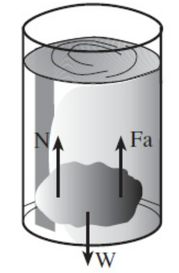

Hukum Archimedes adalah sebuah hukum tentang prinsip pengapungan di atas fluida. Hukum Archimedes berbunyi jika sebuah benda yang dicelupkan seluruhnya atau sebagian dalam zat cair, akan mengalami gaya ke atas yang besarnya sama dengan berat zat cair yang dipindahkan oleh benda tersebut.
Seperti pada gambar di atas, gaya apung arahnya berlawanan dengan gaya berat benda. Secara matematis maka gaya apung tersebut dirumuskan sebagai berikut \[F_A = \rho g V_{bf} \]
\(F_A\) = gaya apung atau gaya ke atas (\(N\))
\(\rho_f\) = massa jenis fluida (\(kg/m^3\))
\(g\) = Percepatan Gravitasi (\(m/s^2\))
\(V_{bf}\) = volume benda tercelup (\(m^3\))